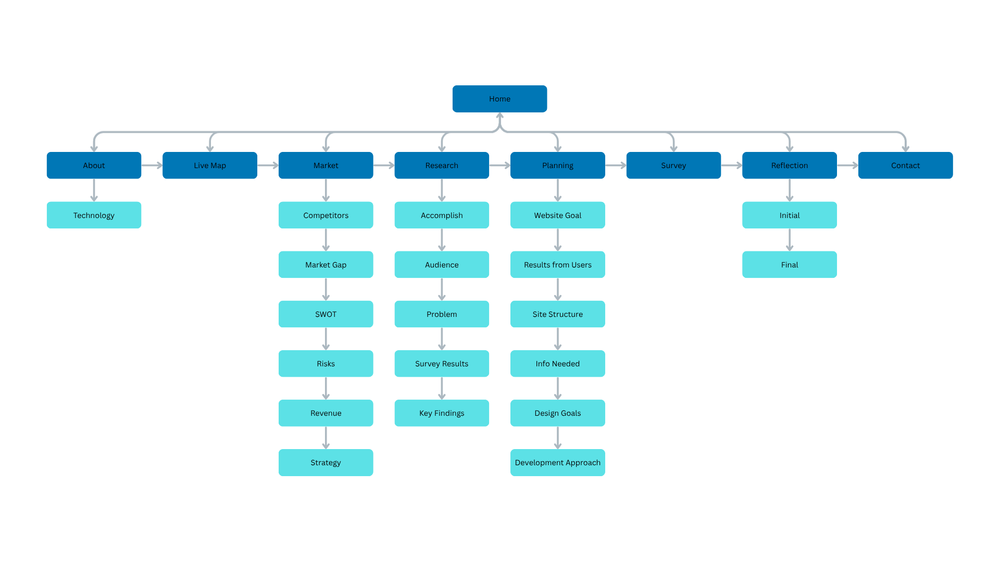

Planning Analysis Sheet
Website Goal
The goal of the HarborSense website is to inform users about ocean pollution and demonstrate how a real-time monitoring system can help communities detect and respond to pollution more effectively. The site also presents HarborSense as a practical and innovative solution for coastal environments.
What Results Do We Want to See?
After visiting the website, users should:
| Outcome | Description |
|---|---|
| Awareness | Understand the causes and impacts of ocean pollution |
| Engagement | Interact with maps, research, and data visualizations |
| Interest | Recognize the value of HarborSense as a solution |
| Action | Be encouraged to learn more, participate, or support environmental efforts |
Website Pages (Site Structure)
| Page | Purpose |
|---|---|
| Home | Introduce HarborSense, explain the ocean pollution problem, and describe how the monitoring technology works |
| Live Map | Display real-world environmental data from sensor locations |
| Market | Analyze target customers, competitors, risks, and revenue strategy |
| Research | Provide background, similar websites, and supporting information |
| Planning | Show project goals, site structure, and development process |
| Survey | Collect user feedback and community data |
| Reflection | Initial and final reflections on the community engagement experience |
| Contact | Allow users to reach out for more information or collaboration |
Website Flowchart
The diagram below shows the overall structure and navigation flow of the HarborSense website.

What Information Do We Need?
| Content Type | What We Have | What We Need / Source |
|---|---|---|
| Ocean Pollution Data | Basic statistics and trends | Scientific sources such as NOAA and environmental research sites |
| Images & Graphics | Some photos and charts | Additional visuals from free image databases and data platforms |
| Sensor Information | Basic system design | More detailed engineering and environmental monitoring resources |
| Market Data | General competitor ideas | More research on existing technologies and pricing models |
Design Goals
The design of HarborSense prioritizes clarity and accessibility. Key design decisions include using a consistent two-color blue palette throughout the site, keeping navigation persistent and clearly labeled on every page, and ensuring that data tables and content adapt to different screen sizes. The overall visual tone is professional but approachable, reflecting the site's mission to make environmental data accessible to everyone.
Development Approach
The site is built using plain HTML and CSS without external JavaScript frameworks, keeping it lightweight and easy to maintain. Content is organized into clearly separated pages, each focused on a specific purpose. Iterative feedback from team members and external contacts such as the Marine Science Center at Canal Dock helped refine both the content and the user experience throughout the development process.